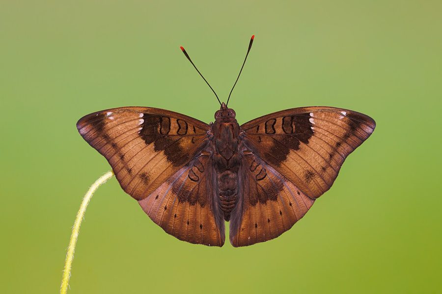

कॉमन बैरन तितलीCommon Baron
Euthalia aconthea · Nymphalidae · INS-0139

- Scientific name वैज्ञानिक नाम
- Euthalia aconthea (Hewitson, 1874)
- Family कुल
- Nymphalidae
- Hindi हिंदी
- कॉमन बैरन तितली
- Local names स्थानीय नाम
- common baron, baron
- Status here यहाँ की स्थिति
- native
- Movement आवागमन
- Resident, here all year
- Known from कहाँ दर्ज
- Others have published records from the Basti–Ayodhya districts बस्ती–अयोध्या के ज़िलों से दूसरों के प्रकाशित अभिलेख
- IUCN IUCN
- not evaluated
- Review समीक्षा
- audited and independently read
When to look कब देखें
Present all year. साल भर मौजूद।
कॉमन बैरन तितली / Common Baron
Euthalia aconthea (Hewitson, 1874) — Nymphalidae
कॉमन बैरन तितली — एक बड़ी गहरी तितली जो वनों के किनारों और पेड़ों के पास पाई जाती है। इसके पंख गहरे भूरे या काले होते हैं। भारत में कुछ इलाक़ों में यह बहुत आम है, लेकिन कुछ जगहों पर इसे पत्तियाँ खाने वाले पौधों के बावजूद नहीं मिलता। इसका कैटरपिलर बेर और आम जैसे पेड़ों की पत्तियों को खाता है।
Quick Identification त्वरित पहचान
| Feature | Description |
|---|---|
| Size | Medium to large butterfly, wingspan 45-55 mm |
| Colour | Dark brown to purplish-black with distinctive markings |
| Pattern | White or pale patches on forewings; coloured patches on hindwings; pattern varies with subspecies and sex |
| Underside | Paler, mottled pattern; eyespots and bands present |
| Flight | Medium-speed flight; stays in canopy and middle vegetation |
| Habitat | Forest margins and secondary growth; not in open grasslands |
Field tip: A medium-large dark butterfly with distinctive coloured patches on wings, found near trees and forest margins. Look in secondary growth areas and near suitable host trees.
हिंदी — कैसे पहचानें: बड़ी काली तितली, रंगीन धब्बे। पेड़ों के पास। गहरे रंग।
Morphology आकारिकी
Biometrics:
| Measurement | Range |
|---|---|
| Wingspan | 45-55 mm |
| Forewing length | 21-26 mm |
| Body length | 13-16 mm |
Wings:
- Upperside: Dark brown to purplish-black ground colour; white or pale patches on forewings; coloured patches (ranging from white to yellow-orange depending on subspecies) on hindwings; distinctive pattern.
- Underside: Paler than upperside, mottled brown; eyespots and bands present; white band or patch visible on hindwing.
Body: Dark brown to black; medium to large sized.
Sexual dimorphism: Males and females show colour and pattern differences; females often paler and with more extensive white markings than males.
Subspecific variation: Subspecies show variation in wing patterns and colouration, particularly in the extent of white and coloured patches.
Life Cycle / Phenology जीवन चक्र
| Stage / Month | Event |
|---|---|
| January–December | Year-round breeding; multiple overlapping generations |
| Egg | Laid on host plant leaves; incubation 6-9 days |
| Larva | Green or brown caterpillar; feeds on host plant leaves; 3-4 weeks |
| Pupa | Brown or green; formed on or near host plant; 8-12 days |
| Adult | 3-5 weeks lifespan; year-round resident with seasonal abundance variation |
हिंदी: साल भर। कैटरपिलर बेर की पत्ती पर।
Host Plants or Prey आहार
Larval host plants:
- Ber (Ziziphus mauritiana)
- Mango (Mangifera indica)
- Other Rhamnaceae and Anacardiaceae family plants (possibly)
Adult food sources:
- Rotting fruit
- Fermented sap from trees
- Rarely observed visiting flowers
Predators / Natural Enemies शत्रु
- Birds: Medium-sized birds; occasionally preyed upon
- Spiders: Larger web-building spiders
- Parasitoid wasps: Attack caterpillars and pupae
- Large insects: Robber flies may capture adults
Agricultural / Human Relevance कृषि प्रासंगिकता
Tree-associated species. The butterfly is associated with host trees including ber and mango. Caterpillars feed on these trees but rarely cause economically significant damage.
Distribution anomaly. Interestingly, the species is described as practically absent from some parts of the Indo-Gangetic plains despite the availability of its larval food plants, suggesting specific habitat or microclimate requirements not fully understood.
Forest-dependent. This is a forest-margin and secondary-growth species, not found in completely open areas. It requires suitable host trees and forest-like vegetation.
Today. Present in suitable habitats but with patchy distribution; common in some areas, absent in others despite host plant availability.
हिंदी: बेर और आम के पेड़ों पर। कभी-कभी मिलता है। नुकसान नहीं।
Expected Locally स्थानीय रूप से अपेक्षित
Not a field record. Written from published accounts for eastern Uttar Pradesh. No confirmed local sighting yet — if you have seen it, that is what the atlas needs.
अभी तक स्थानीय पुष्टि नहीं। यह विवरण प्रकाशित स्रोतों से है, किसी अवलोकन से नहीं।
Expected in forest margins, secondary growth areas, and patches with suitable host trees (ber, mango, and related species) in suitable regions of eastern UP. Distribution is patchy and presence is not guaranteed even where host plants occur. Look in forest margins and secondary growth. A photograph with date and location would confirm a local record.
Distribution वितरण
Global range: Sri Lanka, India, Pakistan, Nepal, Bhutan, Bangladesh, Myanmar.
In India: Distributed throughout much of the country but with patchy distribution; absent from some regions of the Indo-Gangetic plains despite host plant availability.
In Uttar Pradesh: Found in suitable habitats in some parts of the state; distribution is not uniform.
In Basti district / eastern UP: Expected in forest margins and secondary growth areas with suitable host trees; presence not guaranteed and may be local.
Research Questions शोध प्रश्न
Anyone can investigate these | कोई भी इन प्रश्नों की जाँच कर सकता है
- Why is the Common Baron absent from some Indo-Gangetic regions despite the presence of host plants? / कुछ जगहों पर मेज़बान पौधे होने के बाद भी ये तितली नहीं दिखती क्यों? — Investigate microclimate and vegetation requirements.
- Which host plants are actually used by Common Baron caterpillars in the region? — Examine trees for caterpillars and evidence of feeding.
- How many generations occur per year in local populations? — Track emergence patterns throughout the year.
- What is the extent of the geographic range of this species in eastern UP? — Survey multiple locations systematically.
- Do caterpillars show host plant preference, or will they feed on any available species? — Observe feeding preferences on different plants.
Similar Species मिलती-जुलती प्रजातियाँ
| Species | How to tell apart | हिंदी |
|---|---|---|
| Other large dark Nymphalidae | Similar size and dark coloration; specific colour patches and patterns differ; careful observation needed | दूसरी बड़ी काली तितलियाँ |
| Euthalia species | Related; differ in specific patterns and colour patches; distribute differently | दूसरी यूथालिया प्रजातियाँ |
Field rule: A medium-large dark butterfly with distinctive white and coloured patches on dark wings, found in forest margins and near suitable host trees, is the Common Baron.
Taxonomy & Classification वर्गीकरण
Original description. Described by Hewitson in 1874. Type locality: India.
Subspecies. Multiple subspecies recognized. The subspecies found in southern and central India is Euthalia aconthea meridionalis (Horsfield, 1829).
Taxonomic complexity. Some taxonomists place this species in the separate genus Symphaedra; however, modern treatment often keeps it within Euthalia as a subgenus.
Family and order placement. Order Lepidoptera, family Nymphalidae, subfamily Limenitidinae. The genus Euthalia includes several similar species.
Phylogenetic notes. Euthalia species show adaptation to forest and forest-margin habitats, with complex larval host relationships.
IUCN status rationale. Not formally assessed. Distributed but with patchy occurrence; no global conservation concerns but local presence may be limited.
Photo Gallery फोटो गैलरी
No photos yet — add field photos to media/species/common_baron/ and run node scripts/sync_photos.js.
Wanted:
- Male showing characteristic pattern and colour
- Female showing sexual dimorphism and white patches
- Underside view showing eyespots and bands
- Caterpillar on ber or mango leaf
- Pupa on host plant
- Adult feeding on fermenting fruit
- Different subspecific forms if available
References संदर्भ
- Hewitson, W.C. (1874). Illustrations of New Species of Exotic Butterflies. [original description]
- Kunte, K. (2009). Butterflies of Peninsular India. Universities Press, Hyderabad.
- Kehimkar, I. (2016). BNHS Field Guide: Butterflies of India. Bombay Natural History Society, Oxford University Press, Mumbai.
- Indian Foundation for Butterflies. Checklist of Indian Nymphalidae. Retrieved from https://www.ifoundbutterflies.org
- Wynter-Blyth, M. A. (1957). The Butterflies of India. 2nd edition. Bombay Natural History Society.
- GBIF Occurrence Data — Euthalia aconthea, India (2023). GBIF taxon key: [to be filled].
Source file: species/fauna/insects/common_baron.md